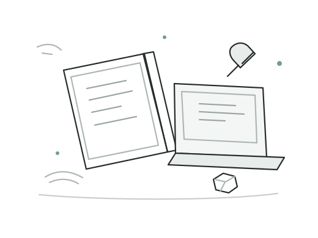
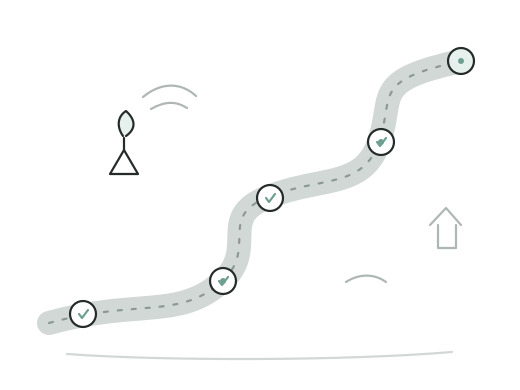
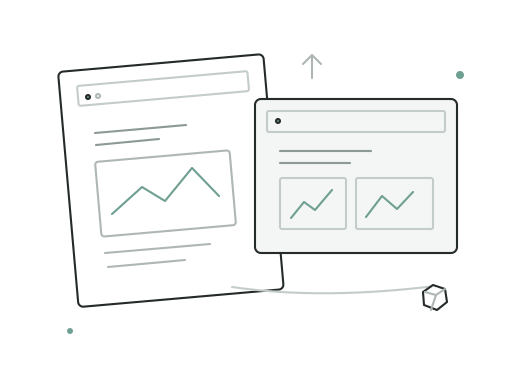
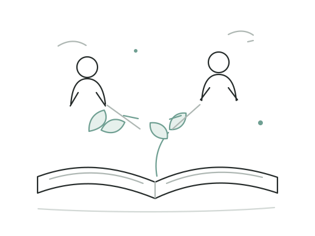
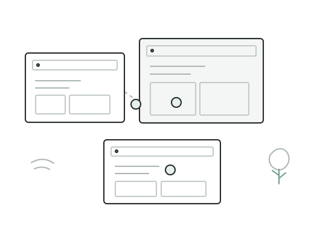

Kenali orang di balik Bagusin.
Saya Bagus Kristian Sianturi. Bagusin adalah ruang untuk pekerjaan digital, pembelajaran, tulisan, dan cerita keseharian—hal-hal berbeda yang tumbuh dari perjalanan hidup orang yang sama.
Di sini ada pekerjaan yang saya tekuni, hal-hal yang saya pelajari, dan cerita yang menjadi bagian dari keseharian saya.

Selalu ada ruang untuk memperbaiki.
Nama Bagusin dekat dengan kata “membaguskan”—membuat sesuatu menjadi lebih baik. Bagi saya, memperbaiki tidak selalu berarti memulai dari nol. Ada kalanya kita hanya perlu melihat kembali, memahami apa yang dibutuhkan, lalu membenahi bagian yang memang perlu.
Gagasan sederhana itu ikut tumbuh bersama pekerjaan, pembelajaran, dan hal-hal yang saya jalani sehari-hari.


Bukan hanya bagaimana sesuatu terlihat.
Melalui Bagusin, saya mengerjakan kebutuhan digital seperti website, susunan halaman, pengalaman pengguna, dan konten yang membantu sebuah usaha menjelaskan dirinya. Tampilan penting, tetapi sebuah website juga perlu mudah dipahami, nyaman digunakan, dan sesuai dengan tujuan pemiliknya.
Setiap kebutuhan berbeda. Karena itu, saya berusaha memahami tujuan dan orang yang akan menggunakan hasilnya sebelum menentukan pendekatan. Prosesnya bisa meliputi perancangan, penulisan, pengembangan, pengujian, dan penyempurnaan.
Saya menyukai solusi yang jelas dan sesuai kebutuhan, bukan kerumitan yang tidak perlu. Komunikasi yang terbuka juga penting agar keputusan dan perubahan dapat dibicarakan bersama.
Setiap orang punya titik mulai yang berbeda.
Bagusin juga menyediakan pembelajaran. Saya ingin materi membantu peserta memahami dasar, mencoba sendiri, lalu membangun kemampuan secara bertahap—bukan sekadar mengikuti langkah tanpa mengerti alasannya.
Dalam belajar, saya ingin memahami terlebih dahulu apa yang sudah dikuasai peserta dan bagian mana yang masih perlu diperkuat. Tidak semua orang memulai dari titik yang sama, dan tidak ada manfaatnya membuat seseorang merasa malu karena perlu mengulang dasar.
Baik anak maupun orang dewasa perlu ruang untuk bertanya, mencoba, dan memahami materi dengan cara yang sesuai. Saya ingin proses belajar terasa jelas dan tetap menghargai setiap peserta.
Rincian materi, durasi, kebutuhan perangkat, dan hasil belajar yang dituju dapat dilihat pada halaman masing-masing kursus.


Jelas dalam kesepakatan, tetap manusiawi dalam komunikasi.
Saya ingin orang merasa cukup nyaman untuk menyampaikan kebutuhan, pertanyaan, atau kekhawatiran sejak awal. Saya juga perlu mendengarkan dan menjelaskan pilihan dengan bahasa yang mudah dipahami, termasuk ketika ada hal yang tidak bisa dikerjakan sesuai harapan.
Saya menghargai komunikasi yang terbuka dan kesepakatan yang jelas. Jika ada perubahan, kendala, atau sesuatu yang belum sesuai harapan, saya lebih memilih membicarakannya dengan jujur dan mencari langkah berikutnya bersama.
Tidak semua cerita harus menjadi pelajaran bisnis.
Blog Bagusin memuat beragam tulisan: perjalanan, pengalaman sehari-hari, panduan, hal yang sedang dipelajari, dan topik lain yang layak dibagikan. Ada tulisan yang praktis, ada yang personal, dan ada pula yang sekadar mencatat pengalaman sebagaimana adanya.
Topiknya beragam, mulai dari perjalanan dan pengalaman sehari-hari hingga panduan dan hal-hal yang sedang saya pelajari. Saya ingin setiap tulisan disampaikan dengan bahasa sendiri, dengan sumber yang jelas ketika merujuk informasi dari pihak lain.
Lihat keseharian Bagus.
Saya tidak harus tahu semuanya untuk terus belajar.
Saya masih terus belajar dari pekerjaan, orang-orang yang ditemui, dan pengalaman sehari-hari. Tidak semua hal langsung berjalan sesuai rencana, tetapi selalu ada ruang untuk memahami dan mencoba lagi.
Memperbaiki berarti bersedia melihat kembali dan mencoba melakukan yang lebih baik.